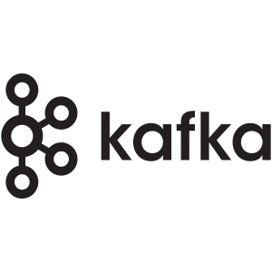
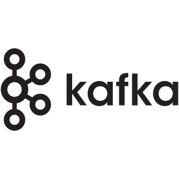
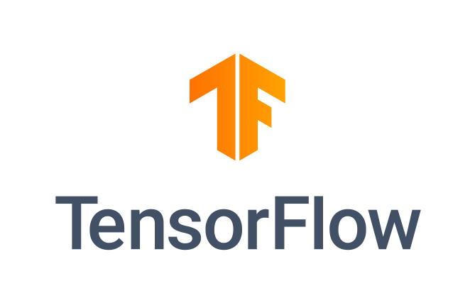
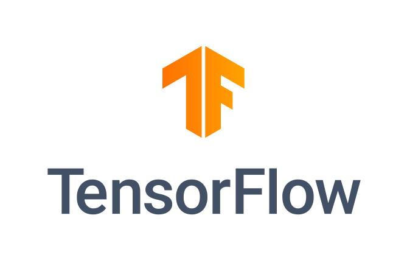

Cyril LAY
Senior Data & ML engineer
Comment puis-je vous aider ?
Je suis ingénieur Machine Learning spécialisé en IA générative & LLMs.
Après plusieurs années en tant que data engineer et ML engineer en CDI, je travaille en freelance depuis 5 ans.
J'ai un diplôme d'ingénieur en informatique avec une spécialisation en data mining.
Mes missions impliquent généralement de l'architecture, du développement, de la formation ou de l'audit.
J'aime travailler de manière autonome et en équipe.
10
ans d'expérience
15+
clients
100%
de satisfaction
N'hésitez pas à me contacter sur LinkedIn si vous souhaitez explorer des opportunités de collaboration.
Que puis-je faire pour vous ?
Systèmes RAG & Bases de Connaissances
Créez des systèmes IA intelligents qui comprennent les données spécifiques de votre entreprise. Je développe des pipelines RAG qui connectent les LLMs à vos documents, bases de données et connaissances internes—permettant des réponses précises et contextuelles qui vont au-delà de l'IA générique.
Développement d'Applications LLM
Je développe des applications prêtes pour la production alimentées par les derniers LLMs. Que vous ayez besoin d'automatisation du support client, d'outils de génération de contenu ou d'assistants intelligents, je construis des solutions scalables adaptées à vos besoins métier.
Solutions Big Data engineering end-to-end
Avec des années d'expérience en data engineering, je peux également gérer et nettoyer les données de votre entreprise, construire des pipelines ETL, intégrer des sources externes et les exposer à d'autres applications, comme des outils de business intelligence.
Architecture de systèmes IA
De la stratégie à l'exécution, je vous aide à transformer vos idées IA en systèmes réels : définition des besoins, sélection des bonnes solutions, accompagnement de vos équipes, et mise en œuvre complète pour que tout fonctionne à grande échelle.
Compétences
Je suis spécialiste des systèmes back-end et expert data ; cependant, j'ai également de l'expérience en tant qu'ingénieur full stack et je peux apprendre rapidement de nouvelles technologies.
Ma mission est de m'assurer que les données de votre organisation sont bien préparées, propres et fiables. Je peux vous aider à créer des pipelines de données à grande échelle qui peuvent impliquer l'intégration de nombreux systèmes différents.
En tant que data engineer, je peux vous aider à choisir les bons outils pour le travail et les combiner pour créer des solutions qui permettent les processus métier de votre entreprise avec des pipelines de données.
Découvrez comment j'ai aidé MyTraffic à collecter et exploiter les données de flux piétonnier pour prédire les meilleurs emplacements retail...
Découvrez les pipelines big data que j'ai développés pour l'équipe BI chez Gumgum...
Langages
Frameworks

 



Ma mission est de vous aider à comprendre si et où le machine learning peut être utile pour votre entreprise, et d'implémenter les modèles et systèmes IA pour vous.
En tant que data scientist, je peux vous aider à créer des pipelines de données pour le machine learning (extraction, nettoyage, augmentation) et déployer des modèles state of the art adaptés à votre problématique.
Découvrez mon travail sur la détection de faux visages sur un dataset vidéo de 500GB…
Découvrez mon travail sur la construction d'un moteur de détection de bots…
Découvrez mon application open-source de classification d'images…
Langages
Frameworks
 


Je peux travailler avec votre équipe pour raccourcir et optimiser le cycle de vie de vos applications, et faciliter des déploiements rapides et propres via la standardisation et l'automatisation. Je suis également capable d'architecturer vos systèmes en utilisant le cloud provider de votre choix (AWS, GCP, Azure, IBMCloud)
Si vous avez besoin de déployer des pipelines CI/CD dans votre organisation ou d'exposer des applications en micro-services, on-premises ou dans le cloud, je peux le faire pour vous.
Langages
Frameworks


- En tant qu'ingénieur LLM/GenAI, je peux :
- Déployer les derniers LLMs open-source dans le cloud ou on-prem, en tant qu'API ou chatbots.
- Concevoir, architecturer et déployer des applications LLM et systèmes RAG end-to-end.
- Booster la productivité de vos data scientists avec des outils MLOps/LLMOps.
- Optimiser les performances d'inférence avec la quantification de modèles et un serving efficace.
- Fine-tuner et adapter les foundation models à votre domaine et cas d'usage spécifiques.

Découvrez mon travail sur la construction d'une API Gateway LLM et d'un moteur RAG open source...
Découvrez mon travail sur l'implémentation d'un moteur RAG personnalisé (partie 1)...
Découvrez mon travail sur l'implémentation d'un moteur RAG personnalisé (partie 2)...
Frameworks & Outils


Recommendations
Samuel K.
Air Liquide - Product Line Manager Datalake
Cyril à été d'une très grande aide dans la réalisation de notre projet d'API data. Il a mis en place toute la stack technique en IaC, du développement à la production ainsi que l'implémentation à partir de la spécification fonctionnelle et au passage le pipeline d'alimentation des données avec les transformations métier. Aujourd'hui elle est déjà utilisée par plusieurs applications. Cyril est déterminé et efficace dans son travail et sait communiquer. Il est un vrai atout pour toute équipe. Je recommande et espère pouvoir travailler de nouveau avec lui.
Alexandre J.
Medissimo - Head of product
Cyril est intervenu chez Medissimo pour mettre en place un module analytique utilisant nos bases de données. En amont de la mission, il nous a conseillé sur la solution la plus adaptée, et a su l'intégrer efficacement à nos infrastructures existantes. Cyril a aussi réalisé une formation en présentiel sur des méthodes et bonnes pratiques data qui ont débloqué et facilité un projet de back-office. Cyril connaît son sujet et c'est avec plaisir que nous retravaillerons avec lui.
Victor H.
ManoMano - Senior Growth Engineer
Cyril nous a rejoint deux semaines pour automatiser un traitement de données CRM via Python/Airflow. En s'adaptant très rapidement à nos outils ainsi qu'à nos process, il a su délivrer chaque échelon du livrable dans les temps. Les décisions techniques furent par ailleurs facilitées par une communication fluide et agréable. C'est avec plaisir que nous retravaillerions avec Cyril.
Jonathan B.
Simudyne - COO
Cyril enthusiastically approaches complex problems and is able to think through them clearly. He is a good listener and is able to explain complicated ideas succinctly to team members on the business and technical sides. Cyril was also involved in some presentations to partners and clients where he represented the company very well. Cyril is a promising machine learning engineer and I would gladly work with him again in the future.
Azam A.
Gumgum - Senior data engineer
At Gumgum, Cyril was working with me on data-engineering and backend development. He started as an intern, and quickly showed great aptitude and a drive for results. Eventually becoming a full time member of the team, he consistently produced results and became a key asset. I would work with him again and recommend him to any software engineering or data related role.
Antoine W.
MyTraffic - Senior software engineer
J'ai eu le plaisir de travailler avec Cyril sur des projets de data engineering pendant 3 mois à MyTraffic. Ca a été un plaisir: Cyril est à la fois curieux et rigoureux, il vise la perfection tout en gardant les impératifs business en tête. Il n'a jamais hésité à "mettre les mains dans le cambouis" et à monter en compétences sur certaines parties du produit moins axées data engineering. Et en bonus: il est super sympa ! Je suis convaincu que, grâce à ses qualités ainsi que ses capacités de raisonnement et de communication, Cyril saura relever tout défi tech qui se présente à lui.
Derniers projets
Voici quelques exemples de projets sur lesquels j'ai travaillé, dans différents contextes (start-ups, grandes entreprises, en indépendant, en tant qu'employé).
Chez Etalab, j'ai développé OpenGateLLM, une solution open source d'IA générative souveraine pour les entités publiques françaises, gérant 300k requêtes quotidiennes. Déployé des dizaines de LLMs auto-hébergés avec des fonctionnalités avancées (RAG, agentic, MCP...). Sécurisé l'infrastructure et obtenu la certification ANSSI.
Chez ManoMano, j'ai conçu l'architecture d'une plateforme MLOps sur AWS, puis l'ai implémentée et industrialisée pour toutes les équipes data de l'entreprise. Elle est actuellement utilisée quotidiennement par l'équipe data science pour construire, déployer et monitorer des modèles ML.
Je dispense des cours et formations data dans les écoles et entreprises (Déploiement de modèles, data science, data engineering, CI/CD, bonnes pratiques en data)


Chez MyTraffic, j'ai implémenté des modèles data science à grande échelle, et les ai déployés dans le cloud pour des insights sur le trafic piétonnier.

Construit et maintenu des pipelines de données batch et temps réel pour fournir des insights business en continu. Ces pipelines étaient en aval d'une plateforme d'ad-serving programmatique générant 50 TB de données par jour.
Déployé une suite d'outils de monitoring et de gestion sur plusieurs clusters Kafka. Ces outils ont réduit le temps d'ingénierie de certaines opérations de cluster (scaling, rebalancing) de 90% tout en améliorant la visibilité globale sur la santé de ces clusters.
Développé un outil web de prévision d'inventaire programmatique à grande échelle. Cet outil utilise un modèle ARIMA et des téraoctets de données historiques pour prédire l'inventaire publicitaire. En étroite collaboration avec les équipes opérationnelles, nous avons fourni aux utilisateurs finaux la capacité de déterminer des objectifs de campagnes publicitaires réalisables avec confiance en utilisant les résultats de prévision.
![Miniature [100%x225]](../assets/lays.pro/img/portfolio/inference-api-screenshot.png)
Un système simple de computer vision capable de classifier des images en 1000 catégories d'objets, comme un clavier, un crayon, et de nombreux animaux. Visiter l'interface ou essayez-le ci-dessous.
Deeplabv3+
DeepLab est un modèle state-of-the-art de deep learning pour la segmentation sémantique d'images, dont l'objectif est d'assigner des labels sémantiques (par exemple, personne, voiture, chien, vélo, etc.) à chaque pixel de l'image d'entrée.
DeepLabv3+ étend DeepLabv3 en ajoutant un module décodeur simple mais efficace pour affiner les résultats de segmentation, en particulier le long des contours d'objets.
Selon Papers With Code, il a la meilleure précision et est l'état de l'art actuel sur le dataset Pascal VOC.
Le code est disponible ici.